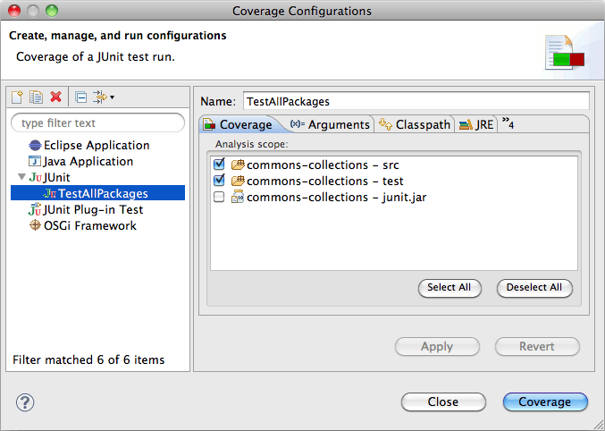

Launching in Coverage Mode
Eclipse allows running Java programs directly from the workbench. Programs can be launched in different so called launch modes. In a standard Eclipse installation you can launch your programs either in Run or in Debug mode. EclEmma adds a new launch mode Coverage which is available from the Run menu and the toolbar:

Note: If the Coverage drop-down toolbar button is not visible in your current workbench perspective, open the Customize Perspective... dialog and enable the Coverage command group on the Commands tab.
Currently the following launch types are supported:
- Local Java application
- Eclipse/RCP application
- Equinox OSGi framework
- JUnit test
- TestNG test
- JUnit plug-in test
- JUnit RAP test
- SWTBot test
- Scala application
Existing launch configurations can be launched directly in Coverage mode using default settings. As with the Run and Debug mode you might also select a Java element and launch it directly from the Coverage As context menu. If required some settings can be modified in the coverage launch dialog:

In the Coverage tab the Java class path entries for code coverage analysis can be selected. At least one entry must be selected to run an application in Coverage mode. The rules which class path entries are selected by default can be adjusted in the code coverage preferences.
Coverage Data Collection
Coverage data is collected and presented automatically when the application terminates on its own. If the Java VM is killed externally, e.g. with the Eclipse Terminate action, coverage results can not be shown. In addition intermediate coverage data dumps can also be requested from any process running in Coverage mode. Such dumps can be triggered from the toolbar of the Coverage view.